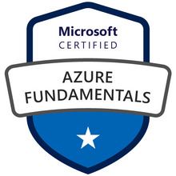
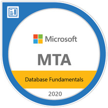

About Me
I'm a Technical Operations Analyst from rural Pennsylvania with the desire to conquer all things Cloud. After more than a decade of general IT experience and being undecided on a specialty, I began working in Azure and AWS in early 2020 and immediately fell in love.I feel that my years of mixed exposure to networking, databases, and applications makes me a perfect fit for the world of Cloud Computing, in which all of the above are enveloped and accentuated by virtualization.
Aside from work, I enjoy spending time with my wife and son, and partaking in the occasional powerlifting meet with friends.
Experience
VancoTechnical Operations Analyst · 2019 - Present
Food Service Solutions
Technical Support Representative II · 2014 - 2019
UPMC
IT Support Specialist · 2013 - 2014
Mount Aloysius College
Helpdesk Technician · 2011 - 2013
Education
Mount Aloysius CollegeBachelor of Science · Information Technology
West Branch Area Jr / Sr High School
High School Diploma
Certifications
 Created for the #CloudGuruChallenge
| This project consists of: | |
|
|
This page has been viewed times. | |
|
| |